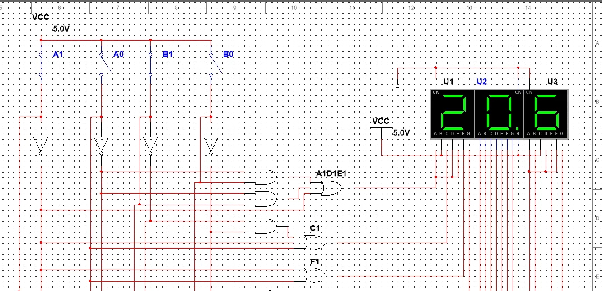
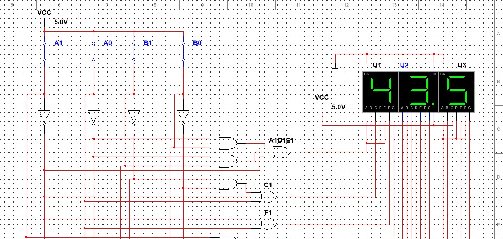
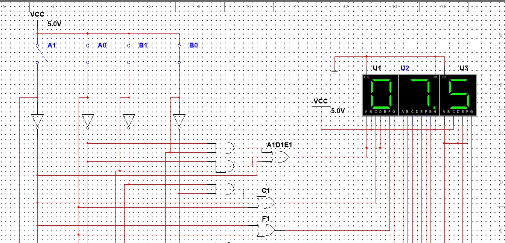
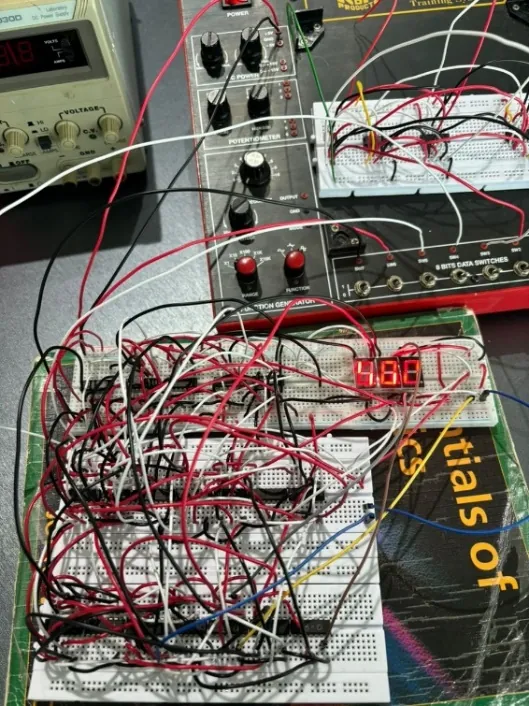
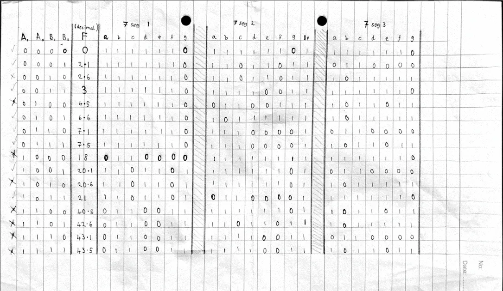
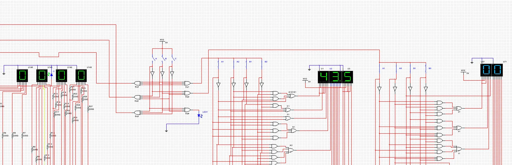

← Archive
2-Bit ALU & Control Unit
An arithmetic logic unit that computes F = 4.5A² + ∛(9B) for 2-bit inputs and shows the result on 7-segment displays. Simulated in Multisim and built on a breadboard.

Overview
I turned the equation into a 16-row truth table, minimised each output bit with Karnaugh maps, and implemented the result with logic gates driving three 7-segment displays.
The group designed a decoder-based control unit so only one member's ALU is active at a time. I assembled the final combined circuit and ran its simulation.
What I did
- 01Built the truth table, K-maps and output expressions.
- 02Built the Multisim simulation: all 16 input combinations correct.
- 03Built the physical breadboard version: 8 of 16 values displayed correctly, which I traced to wiring and leakage issues and documented.
- 04Compiled the group control unit and integration.
Signal path
- A, B (2-bit)
- Truth table
- K-maps
- Logic gates
- 7-segment output
Gallery · 5 images
A closer look




